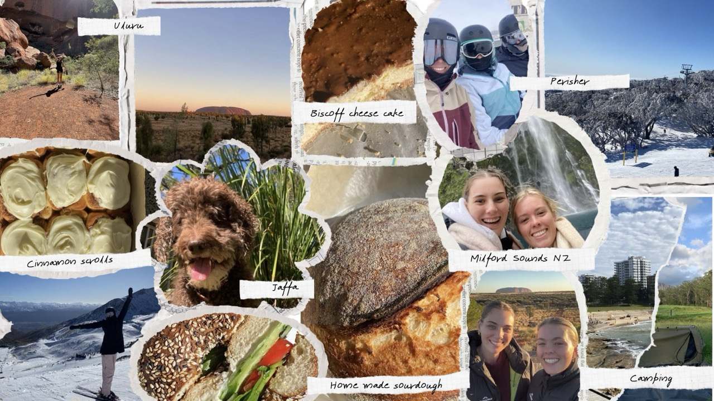

Who am I?

A third-year student teacher at Australian Catholic University. I’m passionate about creating a classroom environment where every student feels empowered to succeed and thrive. I’m currently undertaking a double degree in a Bachelor of Education (Secondary) and a Bachelor of Arts, majoring in Design Innovation and Technologies. So far, I’ve completed one of four teaching placements, which took place in a government school within the Sutherland Shire. During this placement, I delivered lessons designed to engage a diverse range of learners by incorporating a variety of teaching strategies. Throughout my university studies and practicum experiences, I’ve developed units of work and lesson plans that have supported my growth as an educator. These plans have helped me deliver structured, well-paced lessons that promote student engagement and enhance learning outcomes.
My Teaching Areas

Outside of teaching, I enjoy spending time with my dog, Jaffa, and making the most of summer (my favourite season) by soaking up the sun and hanging down at the beach. I also love skiing during the winter months and have a passion for travel and adventure. I’ve explored many incredible places across Australia, including Uluru, and have also travelled overseas to destinations such as New Zealand (my favourite!), Fiji, and Vanuatu. These experiences have not only given me a love for exploring new environments and cultures but have also inspired me to bring creativity, curiosity, and a sense of adventure into both my personal life and teaching practice.

Where have I taught?
| School | Subjects Taught | Year Level | Term |
|---|---|---|---|
| Lucas Heights Community School | Stage 4 Tech Mandatory & stage 5 Food Technology | Year 7-8 & 9-10 | Term 4, 2024 |